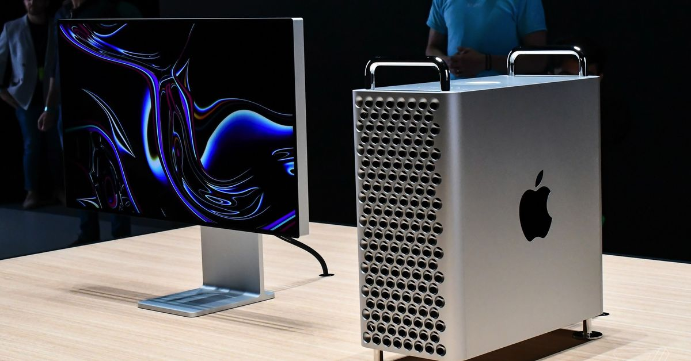

Mantenimiento
Computo
Inicio
corte uno
corte dos
corte tres
Mantenimiento de equipos de Computo

García Tenorio Iñaki Yarim
2017012341
6IV21
Claudia Espinosa Acosta
Cecyt 1 "Gonzalo Vazquez Vela"
Instituto Politecnico Nacional